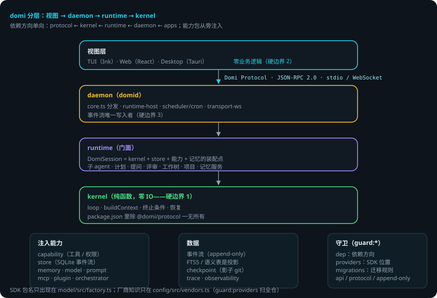
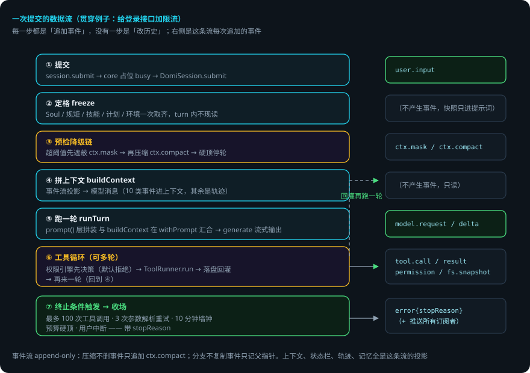

DOMI · DOCS
架构：domi 内部结构导图
本页回答四个问题：domi 由哪些部分组成？一条消息进去后发生什么？为什么 kernel 必须零 IO？出错了会怎样？ 用它定位自己在代码库里的位置，然后深入各子系统专项文档。 贯穿例子：给登录接口加限流——从你点发送，到 domi 改完文件、给你看 diff。
先说结论
- domi 分四层：视图层 → daemon → runtime → kernel，外加从旁注入的包。
- kernel 零 IO：纯函数，不碰存储、网络、模型。它要什么，都从 ports 注入。
- daemon 是事件流的唯一写入者。客户端只提交意图，同一会话串行。
- 一条消息走六步：提交 → 定格 → 预检降级 → 拼上下文 → 跑一轮 → 工具循环，直到终止条件触发。
- 事件流只追加，不改写。上下文、轨迹、记忆全是这条流的投影。
- 依赖方向单向：
protocol ← kernel ← runtime ← daemon ← apps。
用到的词
| 词 | 意思 |
|---|---|
| 视图层 | 终端（TUI）、网页（Web）、桌面壳（Desktop）。零业务逻辑。 |
| daemon | 后台进程 domid。会话宿主、事件唯一写入者。 |
| kernel | 纯函数 agent loop：拼上下文、跑一轮、终止条件、恢复。 |
| runtime | 装配点：把 kernel + store + 记忆 + 能力拼成 DomiSession。 |
| 投影 | 从事件流算出来的视图（上下文、轨迹、状态栏）。 |
| 注入 | 把外部能力（事件读写、工具执行、时钟）通过接口递给 kernel。 |
1. 总体流程


2. 四条边界
三条硬边界由 guard:dep（depcruise + 物理依赖守卫）在 CI 里查：
- kernel 零 IO。
packages/kernel不 import 视图、不 import 具体存储 / 网络 / 模型 SDK。它的package.json里除了@domi/protocol一无所有——物理上装不了就写不出违规代码。它需要的一切（事件读写、工具执行、时钟）从 ports 注入。 - 三端零业务逻辑。
apps/*只经@domi/client-core+ Domi Protocol 与 daemon 通信。投影逻辑（轨迹、问题框状态机、会话 store）一律放packages/client-core。 - daemon 是事件流的唯一写入者。客户端只提交意图；同一会话串行，第二个请求直接回
SESSION_BUSY（不排队、不静默丢弃）。 - 依赖方向单向：
protocol ← kernel ← runtime ← daemon ← apps。capability / store / memory / model / prompt从旁注入，runtime是装配点。
SDK 包名只允许出现在 packages/model/src/factory.ts；厂商知识只在 packages/config/src/vendors.ts（guard:providers 扫全仓）。
3. 包结构
packages/ 共 22 个包，按职责分四组：
| 组 | 包 |
|---|---|
| 核心链 | protocol（契约）· kernel（agent loop）· runtime（门面）· daemon（宿主） |
| 注入能力 | capability（工具注册表 / 权限引擎）· store（SQLite 事件流）· memory（压缩 / Soul）· model（模型接口）· prompt（分层拼装） |
| 扩展宿主 | plugin · mcp · orchestrator（DAG）· codeintel · checkpoint（回滚）· trace · observability |
| 工具 | cli · config · client-core · notify · eval · i18n |
apps/ 三个端：tui（Ink 7，同一二进制经 DOMI_INTERNAL_ROLE=daemon 也可当 domid）、web（Vite + React）、desktop（Tauri 套壳）。
4. 一次提交的数据流
还是「给登录接口加限流」。你点了发送：
- 客户端
session.submit→ daemoncore.ts同步占位 busy，交给DomiSession.submit。 - runtime 定格（freeze：Soul / 仓库规矩 / 技能清单 / 计划 / 环境一次取齐，turn 内不现读）。
- 预检降级链：预算器超阈值先遮蔽（
ctx.mask），再超压缩（ctx.compact），硬顶停轮。 buildContext从事件流投影出模型消息——只有 10 类事件进上下文，其余是轨迹。- kernel 跑
runTurn：prompt()层拼装（含动态注入的 Soul 层）与buildContext在withPrompt汇合 →provider.generate流式出model.delta→ 逐条经sink.append落盘 → daemon 把新事件作为通知推给所有订阅的客户端。 - 模型请求工具 →
ToolRunner.run执行，权限引擎先决策（默认拒绝，决策本身就是一条permission事件）；tool.result落盘后回灌上下文，再来一轮。 - 任一终止条件触发，产出带
stopReason的error事件收场。
事件流是 append-only 的：以上每一步都是「追加事件」，没有一步是「改历史」。压缩、分支、状态栏、轨迹、记忆、编排状态全部是这条流的投影。
5. 事件流是唯一的真相
会话不是一个消息数组，而是一串只追加的事件：user.input、model.delta、tool.call、permission、tool.result……投影是纯函数——同样的输入永远得出同样的视图。
import assert from 'node:assert/strict'
type Ev =
| { t: 'user.input'; text: string }
| { t: 'model.delta'; text: string }
| { t: 'permission'; decision: string }
| { t: 'model.usage'; raw: Record<string, number> }
function project(events: Ev[]): Array<{ role: string; content: string }> {
const out: Array<{ role: string; content: string }> = []
let text = ''
const flush = () => {
if (text) out.push({ role: 'assistant', content: text })
text = ''
}
for (const ev of events) {
if (ev.t === 'user.input') {
flush()
out.push({ role: 'user', content: ev.text })
} else if (ev.t === 'model.delta') text += ev.text
}
flush()
return out
}
const msgs = project([
{ t: 'user.input', text: '你好' },
{ t: 'model.delta', text: '你' },
{ t: 'model.delta', text: '好' },
{ t: 'permission', decision: 'allow' },
{ t: 'model.usage', raw: { input_tokens: 3 } },
])
assert.deepEqual(msgs, [
{ role: 'user', content: '你好' },
{ role: 'assistant', content: '你好' },
])
6. 出错了怎么办：限流做到第 2 步，工具崩了
- 工具执行失败。
tool.result带 error 落盘，回灌上下文。模型看到错误信息，下一轮决定重试、换方案还是问用户。domi 不吞错误。 - 权限被拒。权限引擎默认拒绝。
permission事件落盘，模型得知被拒，改走不需该权限的路径。 - 会话忙（另一个请求正在处理）。
SESSION_BUSY回给客户端。不排队、不静默丢弃。 - 终止条件触发。最多 100 次工具调用 / 3 次参数解析重试 / 10 分钟墙钟 / 预算硬顶 / 用户中断——任一命中就收场，产出带
stopReason的error事件。 - daemon 崩溃。事件全在 SQLite 里。重启后按事件流重建投影，一条不丢。
一张表看全部情况
| 情况 | domi 做什么 | 你要做什么 |
|---|---|---|
| 工具执行失败 | tool.result 带 error 落盘，模型下一轮处理 | 不用管（或看轨迹里的错误） |
| 权限被拒 | 落 permission 事件，模型改路径 | 想放行：在权限面板允许该操作 |
| 会话忙 | 回 SESSION_BUSY，不排队 | 稍后再试 |
| 终止条件触发 | 带 stopReason 收场 | 看 stopReason 决定继续还是调整 |
| daemon 崩溃 | 事件落盘不丢，重启重建投影 | 重启 domid |
7. 可靠性靠什么
- 事件流只追加。任何历史事件永远可解析（新增类型升 SCHEMA_VERSION 并补 fixture）。
- kernel 零 IO。核心逻辑可测：喂事件、断言输出，不用起服务。
- 权限默认拒绝。每个决定都是一条事件，事后可审计。
- Tool 是唯一执行原语，Skill 只是文字。工具 / MCP / 插件 / 引用的输出是数据，不是指令。
- 投影是纯函数。同样的流，永远同样的视图；坏了能重放。
- 边界有守卫。依赖方向、厂商知识位置、迁移规则都有
guard:*在 CI 里查。
已知限制
- 会话串行：同一会话同时只处理一个请求。
- kernel 的纯函数带来样板：每次 IO 都要走注入，改一个端口要动 kernel + runtime 两层。
- 事件流是唯一真相，但 SQLite 单文件是单点；没有集群 / 多副本。
- 投影重算与事件量线性相关：超长会话的首次投影会变慢（有压缩与遮蔽缓解）。
代码在哪里
| 主题 | 位置 |
|---|---|
| 进程宿主 / JSON-RPC 分发 | packages/daemon/src/core.ts |
| 会话装配点 / 定格 / 降级链 | packages/runtime/src/session.ts |
| agent loop / 终止条件 | packages/kernel/src/loop.ts |
| 事件投影 | packages/kernel/src/build-context.ts |
| 事件存储 | packages/store/src/* |
| 权限引擎 | packages/capability/src/* |
| 依赖守卫 | package.json（guard:*） |
相关
- 一轮里到底发生什么：Agent Loop：一轮里发生了什么。
- 客户端怎么与 daemon 通信：Domi Protocol：daemon 与客户端之间的契约。
- 上下文怎么被治理：压缩与 prompt cache。
- 各子系统导航：文档导航。